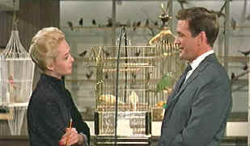
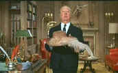

| Birds, The(SE)/A-,B+ |
| Universal/1963/120m/ANA 1.85 |
It was just another ordinary school morning as the sun forced its way through the cracks in my bedroom Venetian blinds. But this particular morning, it was a little different. I awoke to a grating, rattling noise accompanying the first break of light. It was disorienting, but through the sleep crusted slits in my eyes, I located the the source of disturbance coming the window. Rolling out of bed with trepidation, I approached the window. As I pulled back the blinds, a black bird burst from between the blinds and the window. The panic-flapping wings of the wildly flying bird sent chills up my spine, as I threw my arms around to fend off the blind fury of the trapped creature. Screams brought my mother and together we opened the window wider and forced the black bird into flight outside. Just one black bird, not hundreds, had cast panic over my school morning.
 |
| Canaries or love birds? ©Universal |
The Birds is
Alfred Hitchcock's most devious concoction. The pure horror of the inexplicable behavior of birds
surrounding a small, seaside town sixty miles outside San Francisco is enough to provide a
childhood of nightmares for a young viewer. I remember, in its first release, a queasy discomfort
about seeing The Birds. I blocked out memories of my own black bird encounter seven or eight
years before, resisting the pure fear Hitchcock created in this film. The Birds provides
Hitchcock with some of the most cruel and grisly scenes he has ever filmed. Psycho,
admittedly Hitchcock's most revered horror masterpiece, pales in comparison to the claustrophobic
panic The Birds presents. To turn a "Star Trek" phrase, resistance is futile: The
Birds is coming!
Character takes a back seat to the ornithological stars of The Birds.
While the film starts out as a light romance set in San Francisco, hovering over every move is the
specter of what's coming. With the initial meeting of main characters Melanie Daniels and Mitch
Brenner in a pet store, Hitchcock makes sure we don't lose sight of what's in store for us.
The screenplay is laced with hints at the action to come from the very
first lines of dialogue as Melanie Daniels enters the pet shop, she comments, "Have you ever
seen so many gulls? What do you suppose it is? I was a little antsy to cut to the quick and get
past the romantic set-up, but retrospectively, watching for bird droppings, if you will, makes a an
interesting path to the panic that erupts in Bodega Bay.
Most of the action takes place in and around Bodega Bay. The school house, the
local restaurant and the Brenner farm are the key settings. The Birds never gets too
complex, and that's one of it's great strengths. Birds flock. Birds attack. People panic. It may
not sound like much, but the horror is palpable. The attack of The Birds at the
Brenner house is reminiscent of Night of the Living Dead several years later. Everyone could
learn from Hitchcock. The photographic compositions and the incisive Hitchcock editing are
terrific. Once the bird attacks begin, Hitchcock increases the tension with the precision of sadist
torturing a victim, and it never does let up. Perhaps there a couple cheats, like someone opening a
door beyond all reason, but the result is a harrowing scene never to be forgotten.
Tippi Hedren plays Melanie Daniels with an excess of wide-eyed élan.
There are moments when her cool is beyond comprehension, but she certainly makes an attractive
target for The Birds. Rod Taylor is solid as the romantic lead who spends most of his time
fending off the birds. Happily, romance gets buried under the feathery assault. Jessica Tandy
provides stiff support as Brenner's Mom, and twelve-year-old Veronica Cartwright (Later to co-star
in Invasion of the Body Snatchers) gets to hover in the corners in fright as the little
sister. Too bad Suzanne Pleshette didn't get more screen time as Brenner's former school teacher
flame. An outstanding documentary, All About The Birds,
accompanies the film and gives a thorough understanding of the challenges involved in creating the
chaotic visual effects of the film. The Universal team has put together a formidable group of
observers to share their revelations about the making of The Birds. Tippi Hedren shares her
delights and horrors as well, in an articulate interview cut up in pieces throughout the
documentary, as does co-star Rod Taylor. Veronica Cartwright also shares her memories of a little
girl making a horror movie. Evan Hunter is wonderfully demonstrative in describing the script,
especially the scripted ending that was never shot. I think the original ending may have been even
more powerful than the existing one, but Hunter's explanation for the change is reasonable.
Patricia Hitchcock adds her insights into her father and other principals involving in creating the
look and feel of The Birds share their experiences as well.
|
 |
| Coming attractions. ©Universal |
The DVD package
indicates under the special features both a deleted scene and the original ending. It should noted
that these are not on film, but showcased with script and storyboards or stills. There is also a
comparative storyboard sequence of the attic attack using stills. A split screen treatment would
have been more illuminating instead of the alternate frame approach used. The delightful Tippi
Hedren screen test is included in the package, with Hitchcock's off-screen instructions to Hedren
and actor Martin Balsam adding to the pleasure. Two newsreels promoting The Birds and a
droll theatrical trailer featuring an extended Hitchcock introduction make this first rate special
edition a core collection selection.
The color on this special edition DVD of The Birds is quite simply
spectacular. Perfectly stable, with glorious saturation, colorful background details stand out
richly against the monochromatic bird treatment. Flesh tones are outstanding, presenting a
realistic range. Black are rich and lighting atmospheric lighting is preserved. Everything is
in sharp focus save for most of the Tippi Hedren close-ups, which appear to have been shot through
a softening filter. There is very slight edge enhancement which might exaggerate some of the
grainier sequences. The process shots particularly are very grainy, typical of the effects used at
the time. Happily, I could not detect any obvious artifacts associated with the furious movement of
the birds in the attack sequences. There was slight choppiness to some of the early San Francisco
panning movements. The two channel mono sound is clean, capturing the shrill din of The Birds
to perfection.

The Feature
Archive has articles ranging from A Western is a Western is a Western
to Screen Voices, The Heistmasters,
Akira Kurosawa,
film preservationist Robert Harris
and Shawshank Redemption director Frank Darabont.

Hail, Hail, The Gang's in Hollywood. Click on the poster to read about Hollywood
gang films.
The Movie Poster Archive include extensive poster images from the films of stars like Susan Hayward, Kirk Douglas, Katharine Hepburn and many more. This month's featured star is Edward G. Robinson

DVD Verdict
They may be judgmental, but that's the point,
isn't it. Lots of DVD reviews plus news and more
Home Theater Reference Reviewing System
When you read a DVD review it's of utmost importance to know what equipment is being used to evaluate quality. Click on the projectors to find out more.

More than just talk, one of the friendly and helpful places on the web where home theater views are exchanged. You might find a laugh or two as well.
Imaging Science Foundation
The Imaging Science Foundation promotes proper standards in
home theater viewing. ISF trained technicians offer monitor calibration services to consumers. The
difference in a properly calibrated monitor can be astounding. Click on the image to find an
ISF member near you.